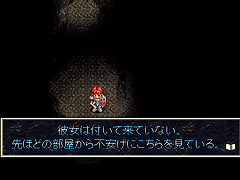
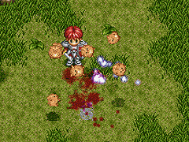
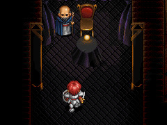

目次 > ゲームについて > 日本Falcom 攻略 > Ys > 情報
らんの眼
Ys(イース) Ys Eternal(VE)/Ys Complete
| 概要 | 情報 | ボス戦 |
| 敵キャラ一覧 | アイテム一覧 | 攻略チャート |
| 地図 | ダウンロード | イースの本 |
| 経験値表 | 地名一覧 | タイムアタック |
| ETERNAL / Complete 比較 | キャラクター一覧 | |
| Ys 攻略へ | 目次へ戻る |
| [ 1 ] [ 2 ] [ 3 ] [ 4 ] [ 5 ] [ 6 ] [ 7 ] [ 8 ] [ 9 ] |
| 手順の関係 |
| ニグティルガー(ムカデのボス)を倒す前に、ヴァジュリオンを倒すと、サラが寝室に引きこもってしまい、会話ができなくなります。そんなに一生懸命本を探しているのならば、「アドル君に手伝ってもらえばいいのに」と思ってはだめです (YS I・II Complete のみ確認) |
| フィーナの直感 |
| フィーナをゼピック村へつれて行く時に、あえてダームの塔入り口へ行くと、フィーナが着いてきません。「ここは怖い」とかメッセージに出たような気がします。当時のことは覚えていないはずですが、直感的に何か感じたのでしょう (YS I Completeのみ確認)  |
| 美味? ピッガードについて |
| Completeでは難易度によってピッガードの行動パターンが違っているようです。攻撃と毛繕いの割合ではなく、毛繕いでの描画間隔が違っていたはずです。 他にも、ETERNAL とComplete ではピッガードのやられ方が違います。  |
| 最強攻撃 DEVIL EYE |
| ダームの塔で、頭に2
本大きな角があるモンスター(ACUMATE)だけがいる階層がありますよ。このモンスターを瀕死状態にしていたぶっていた時に、モンスターの上に「DEVIL
EYE」という文字が表示されて、アドルのHPが100以上減りました。 もう一度見てみようと何度か試してみたのですが、それ以来この現象に遭遇していません。 (ETERNAL、Complete どちらでの現象かは憶えていません) |
| イースの元ネタ |
| 実世界の地図と、イースの世界がある世界とを見比べてみると、地形的に非常によく似ており、エステリアがある場所は実世界のフランスのコタンタン半島付近と思われます。半島付近にエステリアに近い名前の島はありませんが、サルモン神殿と何となく名前が似ている「モンサン・ミッシェル」という世界文化遺産が近くにあります。 さらに、コタンタン半島付近の伝説の一つに、昔この半島付近に「IS（イズ）」という島があったというものがあります。そして「IS」は、ずっと昔に水没し、大陸本土に「IS」の王が逃げてきた・・・と続くそうです。 もしかしたら、この「IS」が「YS」の由来なのかもしれません。 |
| 消える老人 |
| サラの家でアドルにイースの本を渡してくれる老人(Complete ではフランツ老人)がいますが、本をもらいサラの家を出てからは二度とゲームに登場しなくなるようです。  |
| [ 1 ] [ 2 ] [ 3 ] [ 4 ] [ 5 ] [ 6 ] [ 7 ] [ 8 ] [ 9 ] |
| 概要 | 情報 | ボス戦 |
| 敵キャラ一覧 | アイテム一覧 | 攻略チャート |
| 地図 | ダウンロード | イースの本 |
| 経験値表 | 地名一覧 | タイムアタック |
| ETERNAL / Complete 比較 | キャラクター一覧 | |
| ページ上部へ | Ys 攻略へ | 目次へ戻る |